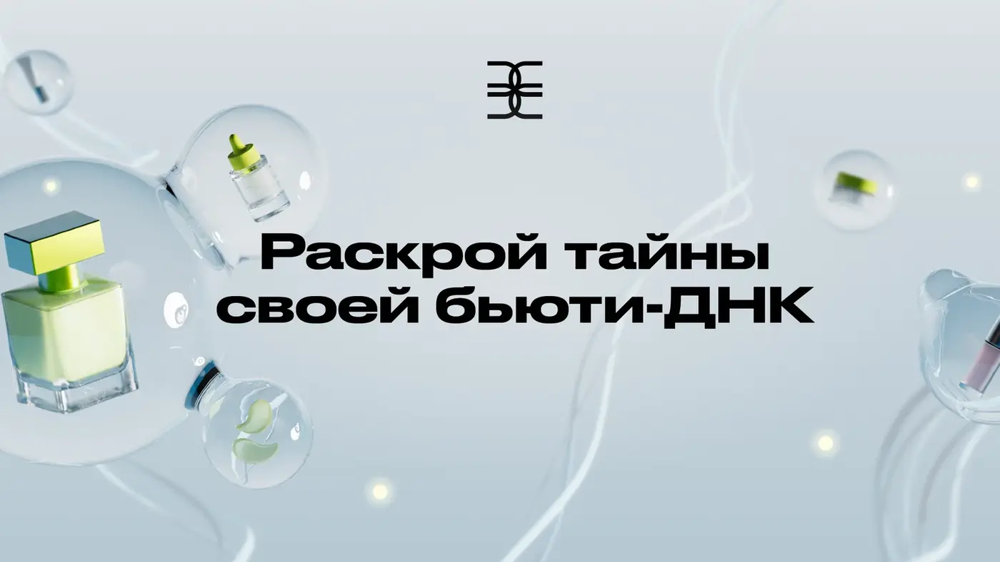
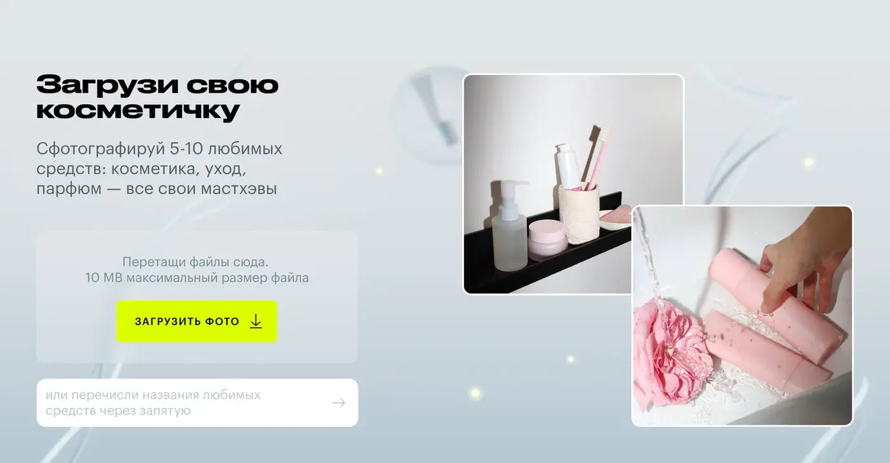
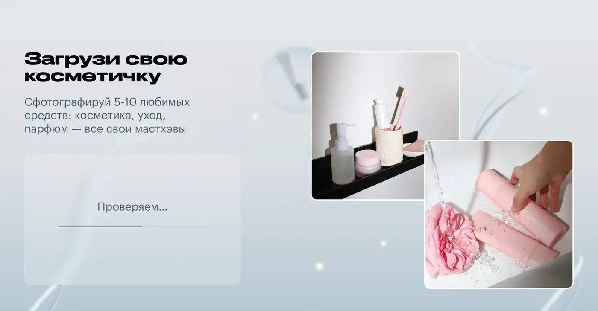

Golden Apple · Special project · Beauty
БЬЮТИ
ДНК
Проект об индивидуальности, в котором красота рассматривается как живой, сложный и неповторимый визуальный код.
КлиентЗолотое Яблоко
ФорматСпецпроект
РольArt Director
КатегорияBeauty / Digital
О проекте
Красота как персональный код
В основе визуальной системы — пластичные структуры, ритмы и формы, напоминающие молекулы, нити и генетические паттерны.
Система связывает персональные типы, beauty-образы и интерактивные результаты в единый сценарий, где графика становится выражением индивидуальности пользователя.
Idea developmentArt directionVisual production



NEXT CASE
↗